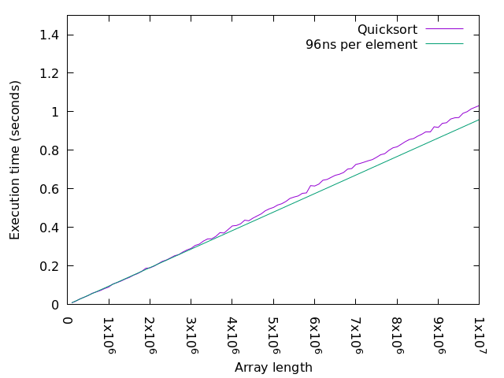
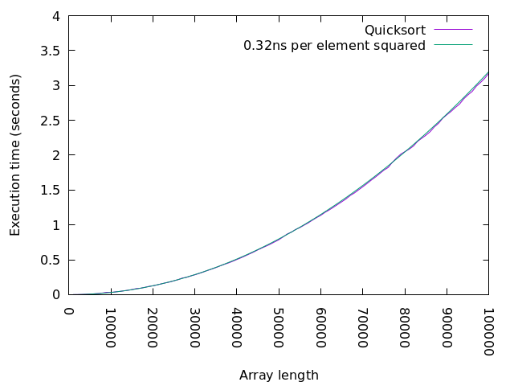
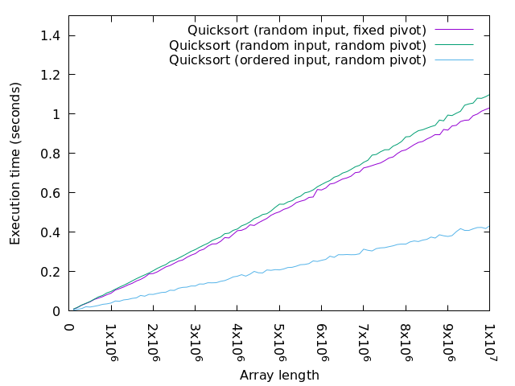
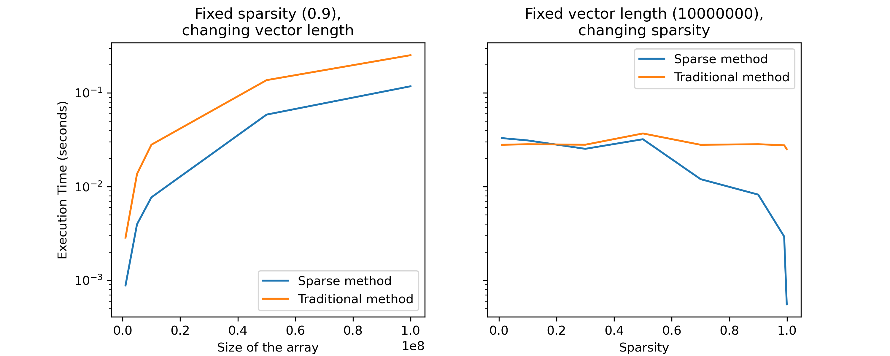

Algorithms
The first step towards writing efficient code is to start from a good algorithm. It is also where the most dramatic performance improvements can be found.
Sometimes good algorithms are available in libraries and the only thing one needs to do is to call them. But when you write code to solve a new problem, or an old problem in a new way, you are on your own.
Hence this chapter of the lesson is about algorithms, or rather about algorithmic patterns.
Tip
We will be measuring execution time in this and later parts. There are a few pitfalls that one should be aware of.
Run your measurements on an unloaded system. Even if you have a multicore, there are many resources that are shared between the cores, including the memory interface. One perhaps surprising example is the power envelope; often clock frequency can be raised if only one core is active.
If you are following this workshop online, you are probably running a videoconferencing system in the background. That is very likely to affect any measurements you make.
Do not measure too short times. There is always some overhead. There is also the case that while the processor is not too busy, it runs with a reduced clock frequency, and it may take a little time before the clock frequency is increased. A good idea is to want to run for at least a quarter of a second or so.
Do not make a longer time to measure by using a loop in a shell script, or similar. Your program will be started many times, and that overhead may become a large part of the time you measure.
Tip
You can find the files used in this section here as a zip archive. Follow the link, click on “View raw” and you will get it downloaded. Move or copy it to where you want it, then unpack it like this:
unzip algorithm-files.zip
Complexity
Algorithms are often categorized by their complexity, meaning their execution time as a function of the size of the input. Since the actual running time varies between systems, the execution time we use in this context is the number of steps that an idealized (model of a) computer called a Random Access Machine, or RAM (do not confound with Random Access Memory), would need. Input sizes are measured in different ways for different algorithms.
Example
For a naive simulation of gravitational attraction between a large number of stars, the size of the problem is typically the number of stars. Since every star is attracted by every other star, the work for a single time step of the simulation is proportional to the square of the number of stars.
As an alternative, one could imagine doing the force calculation by dividing space into a number of fixed size cells and compute the force on each star by considering the mass of stars in each cell. The cost of doing that for one star would be proportional to the number of cells, thus the size and the granularity of the simulated space becomes part of the size of the problem for this alternative approach.
Actual computers differ from the RAM and from each other in many details, and these have important consequences for performance, as we will see later. However, almost always the difference can be expressed as a constant multiplicative factor. That is, one machine is about \(X\) times faster than another independent of the size of the input.
Thus, when we discuss the complexity of an algorithm, we are not interested in absolute performance but rather in how the execution time changes when the size of the input changes. This is typically expressed using the “big O” notation; we write that the naive gravity simulation algorithm above is \(O(n^2)\) to mean that for large enough \(n\) there is a constant \(c\) such that the algorithm uses at most \(cn^2\) steps on a RAM to solve a problem of size \(n\). The “large enough” provisio captures the fact that we are interested in what happens “in the limit”. Technically, it for instance allows us to amortize any fixed cost initialization over the entire computation.
Quadratic algorithms and hash tables
Consider the problem of determining if the elements of an array of interǵers are all unique. Here is a simple version that compares all pairs of elements:
int unique1(int a[], int n) {
for(int i = 0; i < n; i++)
for(int j = 0; j < n; j++)
if(i != j && a[i] == a[j]) return 0;
return 1;
}
Complexity is quadratic (\(n^2\)) due to the nested loops. Some of the computation is clearly redundant, each pair (x,y) of distict indices is checked twice, once when i==x and j==y and once when i==y and j==x. So the first improvement is to remove this simple redundancy:
int unique2(int a[], int n) {
for(int i = 0; i < n-1; i++)
for(int j = i+1; j < n; j++)
if(a[i] == a[j]) return 0;
return 1
}
Here we insist that i<j at all times so we check each (x,y) pair only once and also at the same time we avoid the test ensuring that i != j. Can we do better? Yes, by sorting the array first. Sorting can be accomplished in time \(O(n \log(n))\) which is much faster than \(O(n^2)\). Having sorted the array, equal elements are now adjacent.
int unique3(int a[], int n) {
sort(a, n);
for(int i = 1; i < n; i++ ) {
if(a[i-1] == a[i]) return 0;
}
return 1;
}
Here we helped ourselves to a function sort() that sorts an array of int. There are interesting lessons
to learn from implementing that function, and we will return to these later.
What is the complexity of unique3()? The function first sorts the array, then traverses it linearly in a single
pass, a process that is clearly \(O(n)\). If the algorithm used by sort() is \(O(n\log(n))\), this means
that the entire algorithm is \(O(n\log(n))\) since this is asymptotically greater. There is no constant \(c\)
such that \(cn > n\log(n)\) for large \(n\).
Is there a way to solve this problem even faster? There is at least one variation that is likely to be faster in many cases, and that involves using a hash table. This is a data structure that can be used to implement a set with fast insert, delete, and membership test (in general, a hash table can implement a finite map from a set of keys to a set of arbitrary values). If the keys are small enough integers, we do not need a hash table and can just use an array.
The new version iterates over the integers in the array one by one, looks up each one in the hash table and inserts it if it was not there.
int unique4(int a[], int n) {
ht_t h = new_hash_table(n);
for(int i = 0; i < n; i++ ) {
if(member(h, a[i])) return 0;
insert(h, a[i]);
}
delete_hash_table(h);
return 1;
}
A hash table is implemented as an array that is indexed using a value computed from the key using a hash function. The hash value must be a valid index into the table, so if the size of the table is \(s\) then the hash value \(v\) must satisfy \(0 \leq v < s\).
Each entry in the hash table collects those keys that are mapped to that entry’s index by the hash function. When checking if a particular key k is present, all of the keys in the hash table entry must be compared to k. Clearly, performance will be best if each table entry contains at most one key. In that case, there will only be one comparison computed for each access.
Whether a particular hash function is good or not depends on the distribution of keys that we want to keep in the hash table at the same time, which is application dependent.
Uses of hash tables
Hash tables are useful in several high performance computing domains:
- Genomic Data Processing
In bioinformatics, hash tables are often used to store and quickly retrieve genomic data. For example, they can be used to store k-mers (subsequences of length k) in DNA sequence analysis or genome assembly tasks.
- Graph Analytics
In graph analytics, hash tables can be used to represent sparse adjacency matrices or edge lists, allowing for efficient access and manipulation of graph data.
- Particle Simulations
In particle simulations (like molecular dynamics), hash tables can be used to efficiently keep track of particles in a given spatial region. This is particularly useful when particles only interact with very nearby particles. Then space can be divided into a grid of cells. If most cells are empty, a hash table where the key is the cell coordinates can be a good representation.
Divide and conquer, sorting and randomness
Above, we used sorting to improve the performance of the unique function. Here we
will take a look at how a sort function can be implemented. This will illustrate
some additional points about algorithm design.
Below is an old and famous sorting algorithm known as Quicksort. It is an example of a recursive divide and conquer algorithm. The idea of this class of algorithm is to to divide a problem into smaller sub problems, solve the sub problems, and combine the solutions. For this scheme to work, small enough sub problems must be solved by another method or be trivial. For the case of sorting, an array with less than two elements is trivially sorted.
Thus, in a divide and conquer algorithm, the meat is in dividing the original problem into two (or sometimes more) sub problems and then combining the results. Either of these steps, but not both, can be trivial (well, if both are trivial, you are very lucky).
1void quicksort(int a[], int n) {
2 if( n < 2 ) return;
3
4 int right = n-1;
5 int left = 0;
6 int pivot = a[right];
7
8 // Put all elements smaller than pivot to the left (lower part)
9 // and all larger elements to the right.
10 while( left < right ) {
11 if( a[left] <= pivot ) {
12 left++;
13 } else {
14 a[right] = a[left];
15 right--;
16 a[left] = a[right];
17 }
18 }
19 a[right] = pivot;
20 // All elements to the left of 'right' are now smaller than
21 // all elements to the right (above) 'right'.
22
23 quicksort(a, right); // Sort the smaller elements
24 quicksort(a + right + 1, n - right - 1); // Sort the larger elements
25}
We can visualize the execution of this algorithm as a call tree where each node
corresponds to one call to quicksort. The root is the call in the
main function which passes an array with 201 numbers. That array is then
split in a lower and an upper part. Note that the numbers in the figure represent
indices, places in the array, rather than the numbers in it.
{kind=link}
The call tree of quicksort
As you can see, the tree is not perfectly balanced; the largest child will process somewhat more than half of the data of its parent. If the division was perfect, the depth of the tree would be the base 2 logarithm of the number of elements in the array to be sorted. Now it will be somewhat larger, but not more than \(1.4 \log_2(n)\) on average.
As you can see in the figure, each layer of the call tree processes approximately \(n\) numbers (pivots at upper levels are skipped). Hence the expected performance is roughly \(1.4n\log_2(n)\).
But how fast is that in practice?
Exercise
Explore the performance of quicksort! You can build the program with the
following command:
gcc -O3 -o quicksort quicksort.c qmain.c
This will give you an executable program that you can run as follows:
./quicksort 1000
The argument tells the main program how many numbers to have in the array to sort. The numbers will be initialized randomly.
You can get the execution time from the time command, as follows:
time -p ./quicksort 1000
Try out some different sizes!
Solution
Here are the results from the Core i7-8550U as well as a linear function fitted to the smaller sizes (left part of plot).
We see that for large \(N\), \(N \log(N)\) is pretty linear, although the constant is rather large; 96ns corresponds to some 350 clock cycles. But that must be amortized over some 30-ish levels in the tree. This gives a cost of just over 10 cycles per comparison, which, as we will see later, is expected.
One conclusion we can draw from our study of quicksort is that as long as
\(n\) is the size of a data structure, that is related to memory size and not
absolutely fantastically large, \(\log(n)\) is more or less a constant (it will
for instance hardly be larger than 40). Maybe
not a very good constant, but it is not
something that makes the complexity of a program grow without bound.
So far, we have run quicksort with randomly generated data, but what if the
data is already sorted?
Exercise
Explore the performance of quicksort in a sorted input. The
main function will initialise the array to be strictly increasing if
you invoke the program like this:
./quicksort seq 1000
Tip: Try smaller sizes first!
Solution
Here is what we get on the Core i7-8550U:
This is quite a big difference to the random input case. A quadratic function fits very well.
What is happening here is that the pivot chosen always happens to be the largest value in the range, so in each case one of the recursive calls will get everything but the pivot wheras the other will get an empty range. Thus the depth becomes linear rather than logarithmic and the complexity becomes quadratic.
One solution to this problem is to choose the pivot randomly. This means that instead of running slowly on some input arrays, the algorithm runs slowly on some random uses. Hence, whatever the input distribution, the algorithm will run fast on average.
1#include <stdlib.h>
2
3void quicksort(int a[], int n) {
4 if( n < 2 ) return;
5
6 int pivot_idx = n < 3 ? 0 : rand() % n;
7
8 int right = n-1;
9 int left = 0;
10 int pivot = a[pivot_idx];
11 a[pivot_idx] = a[right];
12
13 // Put all elements smaller than pivot to the left (lower part)
14 // and all larger elements to the right.
15 while( left < right ) {
16 if( a[left] <= pivot ) {
17 left++;
18 } else {
19 a[right] = a[left];
20 right--;
21 a[left] = a[right];
22 }
23 }
24 a[right] = pivot;
25 // All elements to the left of 'right' are now smaller than
26 // all elements to the right (above) 'right'.
27
28 quicksort(a, right); // Sort the smaller elements
29 quicksort(a + right + 1, n - right - 1); // Sort the larger elements
30}
Here we make a random selection unless n is so small that it does not matter
(if we would try to get a sort function that was fast in practice, we would probably
go for another algorithm, for instance selection sort, for small n).
Exercise
Explore the performance of quicksort with random pivoting! You can build
the program with the following command:
gcc -O3 -o quicksort quicksort-rp.c qmain.c
This will give you an executable program that you can run as before:
./quicksort 1000 # Randomly scrambled input
./quicksort seq 1000 # Ordered input
Try out some different sizes, and compare scrambled and ordered input!
Solution
Here are the results from the Core i7-8550U for both scrambeld and ordered input and with the original (fixed pivot) scrambled input times.
We see that with rendom pivots, we are back to an almost linear behaviour. Interestingly, the case with random pivot and ordered inputs runs almost three times faster than the unordered input. We will come back to this when we know more about computer architecture.
We can also see that for unordered input, the random pivot version is somewhat slower due to the cost of computing the random numbers.
Sparse algorithms
A typical situation when dealing with vectors or matrices is when one of them are sparse, meaning that it contains a large fraction of zeroes. An example is the inner product between two vectors. If calculations are executed through the usual method, as seen in the code below, a lot of time will be wasted in computing zeroes.
1double traditional_ip(double *v1, double *v2, size_t size) {
2double sum = 0;
3for(size_t i = 0; i < size; i++) {
4 sum += v1[i] * v2[i];
5}
6return sum;
7}
Instead, the classical examples of sparse algorithms come from linear algebra and teach us to represent such data structures more compactly by taking advantage of its sparseness, typically, by only representing the non zero elements. Similarly, when computing the inner product between two vectors, if one of them is sparse, only the positions where that vector is nonzero need to be considered.
1typedef struct {
2 double val;
3 size_t index;
4} nonzero_t;
5
6double sparse_ip(nonzero_t *sv, size_t n_nonzero, double* dv) {
7 double sum = 0;
8 for(size_t i = 0; i < n_nonzero; i++) {
9 sum += sv[i].val * dv[sv[i].index];
10 }
11 return sum;
12}
If more than half of the values in sv are zero, the sparse representation
will be smaller. Also, the multiplication and addition need only be performed
for the nonzero elements of sv.
On the other hand, we have indirect accesses for dv; rather than simply walking
through it like we would do in a dense implementation, we make random accesses
to the elements indicated by sv. Also, SIMD vectorization becomes more difficult
and less efficient.
So in practice, the trade off may well be at 80-90% zeroes rather than 50%, but that depends on details of algorithms and hardware.
Exercise
The code dotproduct.c includes both the method above as well as a direct method for calculating dot products. Explore and compare their performance!
gcc -O3 -o dotproduct dotproduct.c
To use, you can use the parameters such as vector size, method (sparse, traditional), and degree of sparsity (from 0 to 1).
./dotproduct --size 10000000 --method both --sparcity 0.9
The code already displays time measurements, so you do not need to use time -p
before running it. Try variating both the vector size and the amount of sparsity!
Solution
Here are the results from the previous exercise.
The execution keeps roughly between 2 to 3 times faster in the sparse method as the length of the array increases.
On the right, for lower sparsity, the traditional method of calculating inner product ends up being faster than the sparse method. This changes more drasticly at around 50 to 60%, and having a even more faster execution time when the sparsity is at over 90% (i.e., 95%, 99%, 99.9%). In the last two cases, the execution time can be up to 45 times faster in the sparse method.
Further reads
Thomas H. Cormen, Charles E. Leiserson and others. “Introduction to Algorithms”, Fourth Edition. The MIT Press. 2022.
Phillip N. Klein. “Coding the Matrix: Linear Algebra Through Applications to Computer Science”, 2013 Edition. Newtonian Press. 2013.
Harold Abelson, Gerald Jay Sussman and others. “Structure and Interpretation of Computer Programs”, 2nd Edition. The MIT Press. 1996.